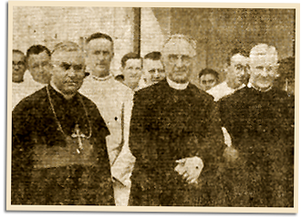

|
j
a v a s c r i p t |
November 16, 1942
Naval, air and land battles continue in the Solomons as the Japanese make a supreme effort to oust the Americans. MacArthur's bombers are not idle either, visiting Timor, Buna and Rabaul. Sighted in a streetcar: A young, smart-looking girl wearing a rose dress with a large white "V" on her blouse and blue letters saying "keep 'em flying." The two eyewitnesses were petrified for her. It's the 102nd day of Hans Menzi's internment and the Menzis are feeling very strained. After suffering a breakdown last week, Mrs. Menzi's hair has turned white. Hearing he might be in Bilibid, they asked Father Theo to check.

Finneman (L) & Buttenbruch (R) ca.'36
Father Theo celebrated a Requiem Mass for Bishop William Finnemann, the Archbishop's right-hand man and private secretary. He died in Mindoro while in Japanese hands — the Japanese said it was suicide. A few days ago, the Japanese took the Klinglers' sharp Filipino lawyer away from their match factory. He was dead the next day — of "heart failure," according to the Japanese doctor's report. The body was released to his brother who said it was badly bruised. |
|
|
|
|